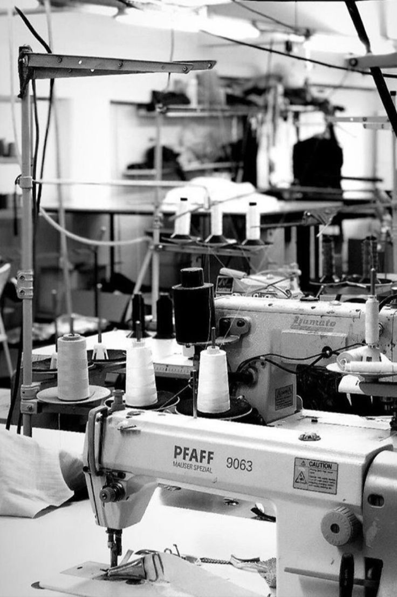
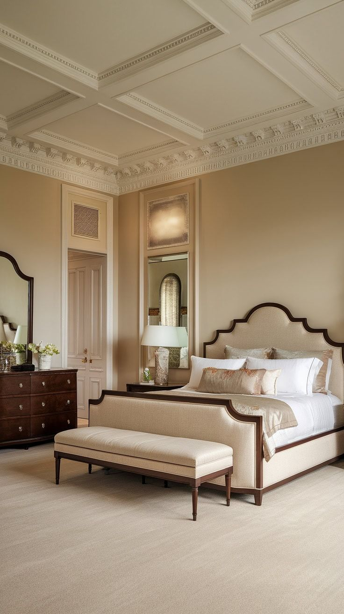

1994

Themelimi
Nisim aktivitetin me fokus tek tekstilet për shtëpi dhe furnizimi i parë për bizneset lokale.
Rreth Nesh
Gjergji H Textil është një nga kompanitë më të hershme dhe më të respektuara në industrinë e tekstilit në Shqipëri, me një histori që fillon në vitin 1994, në një periudhë transformimi të madh ekonomik për vendin. E themeluar nga dy sipërmarrës me vizion, vendosmëri dhe pasion për biznesin, kompania lindi me një qëllim të qartë: të ndërtonte një standard të ri në tregun shqiptar të tekstileve, produkteve për shtëpi dhe furnizimit për industrinë e hotelerisë. Në një Shqipëri post-komuniste, ku tregu ishte ende në fazat e para të zhvillimit dhe ku shumë produkte tekstile mungonin, themeluesit e kompanisë identifikuan një mundësi të madhe për të plotësuar këto boshllëqe. Me një vizion të qartë dhe një dëshirë të fortë për të ndërtuar diçka të qëndrueshme, ata filluan rrugëtimin e tyre në industrinë e textile supply dhe home textiles, duke hedhur themelet e një kompanie që sot njihet për cilësinë dhe përkushtimin e saj ndaj klientëve.
Në fazat e para të aktivitetit, kompania shfrytëzoi potencialin e prodhimit vendas, duke blerë tekstile nga magazinat e Kombinati i Tekstileve Berat, një nga qendrat më të mëdha të prodhimit tekstil në Shqipëri në atë periudhë. Ky ishte hapi i parë drejt krijimit të një rrjeti furnizimi që do të zgjerohej shumë shpejt përtej kufijve të vendit. Falë punës së palodhur, vizionit tregtar dhe besimit në zhvillimin e tregut, Gjergji H Textil arriti të bëhej ndër kompanitë e para në Shqipëri që filloi importin e tekstileve nga tregjet ndërkombëtare, veçanërisht nga China, duke sjellë produkte të reja dhe cilësi të ndryshme në tregun shqiptar. Ky hap strategjik jo vetëm që rriti gamën e produkteve që kompania ofronte, por gjithashtu kontribuoi në modernizimin e tregut të tekstileve në Shqipëri. Rrugëtimi i kompanisë nuk ishte gjithmonë i lehtë. Një nga periudhat më të vështira për ekonominë shqiptare ishte Albanian Civil Unrest of 1997, një kohë kur shumë biznese u detyruan të ndërprisnin aktivitetin e tyre. Megjithatë, përkushtimi dhe vendosmëria e themeluesve të Gjergji H Textil nuk u ndal as në këtë periudhë të vështirë. Edhe gjatë atyre viteve të pasigurta, kompania vazhdoi aktivitetin e saj duke furnizuar klientët në të gjithë vendin. Me një përkushtim të jashtëzakonshëm ndaj klientëve dhe partnerëve të saj, produktet e Gjergji H Textil shpërndaheshin nga Saranda deri në Shkodër, shpeshherë duke shkuar derë më derë për të siguruar që çdo klient të merrte produktet e nevojshme.Kjo periudhë formoi kulturën e kompanisë një kulturë të bazuar në punë të palodhur, besueshmëri dhe marrëdhënie afatgjata me klientët. Pikërisht këto vlera vazhdojnë të jenë edhe sot themeli mbi të cilin ndërtohet suksesi i Gjergji H Textil.
Sot, pas më shumë se tre dekadash përvoje në treg, kompania është rritur dhe është transformuar në një furnizues të rëndësishëm të produkteve tekstile për shtëpi, hotele, resorte dhe sektorin e hospitality. Duke kombinuar eksperiencën e gjatë me standarde moderne të cilësisë dhe furnizimit, Gjergji H Textil vazhdon të jetë një emër i besueshëm në industrinë e tekstilit në Shqipëri. Historia e kompanisë është një histori vizioni, këmbënguljeje dhe besimi se çdo ide e madhe mund të realizohet kur shoqërohet me vendosmëri dhe pasion për punën. Nga fillimet modeste në vitet ’90, deri tek bashkëpunimet me projekte dhe klientë prestigjiozë, Gjergji H Textil mbetet një shembull i qartë i sipërmarrjes shqiptare që ndërton sukses përmes cilësisë dhe përkushtimit afatgjatë.
Rruga Jonë

Nisim aktivitetin me fokus tek tekstilet për shtëpi dhe furnizimi i parë për bizneset lokale.

Vazhdojmë furnizimin në gjithë Shqipërinë dhe forcojmë kulturën e shërbimit ndaj klientit.

Shtojmë linja të reja për hotele, resorte dhe restorante me standarde profesionale.

Fokus te materialet premium, proceset e kontrollit dhe personalizimi për brandet partnere.

Forcojmë eksportin dhe logjistikën për tregjet rajonale me furnizim të qëndrueshëm.